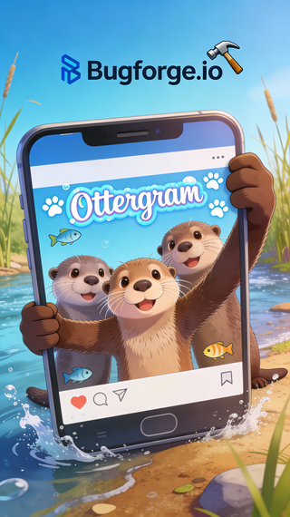
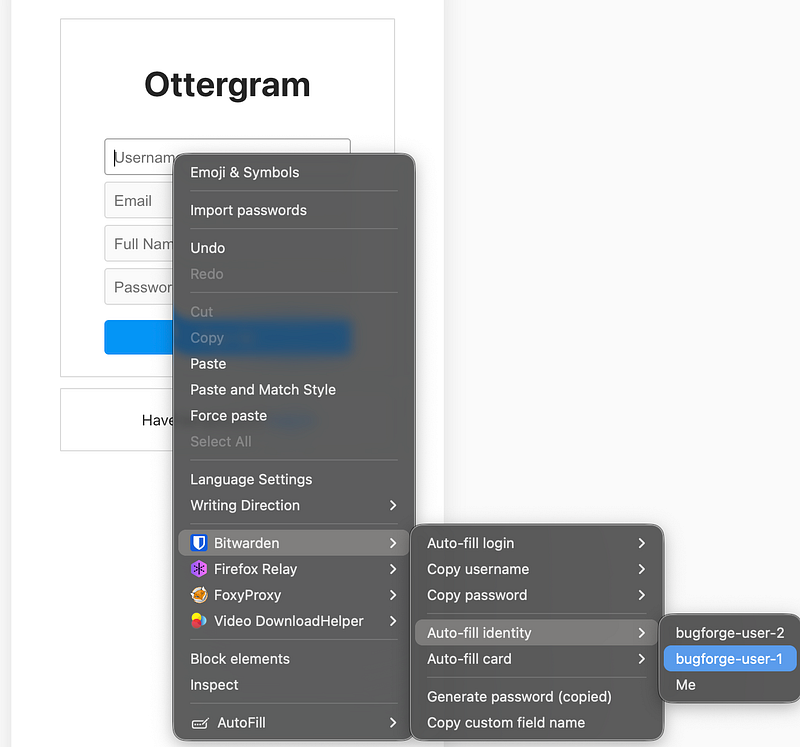
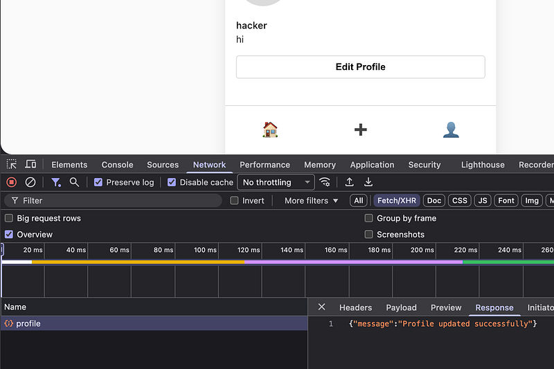
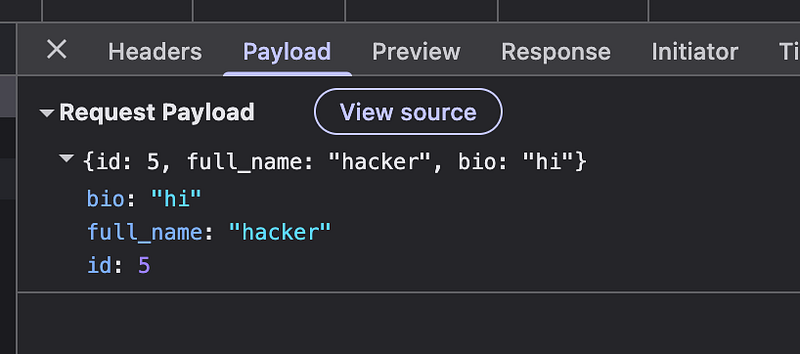
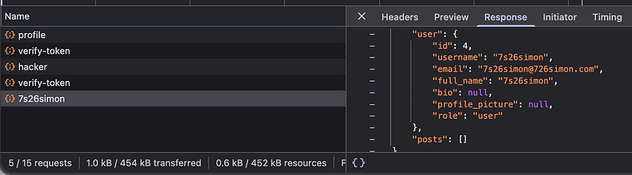
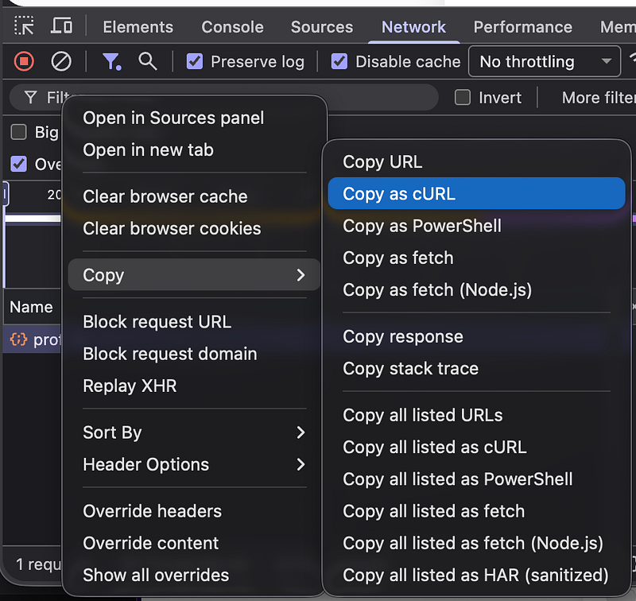
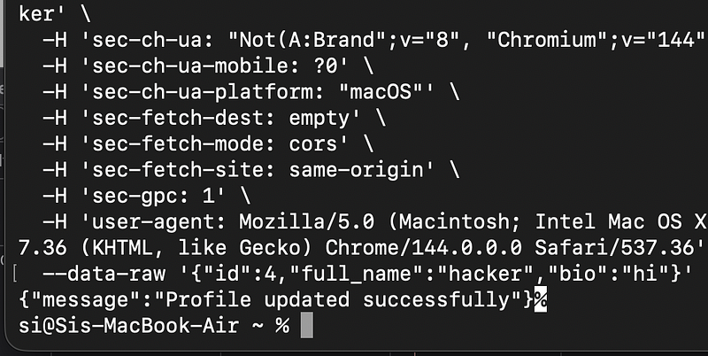
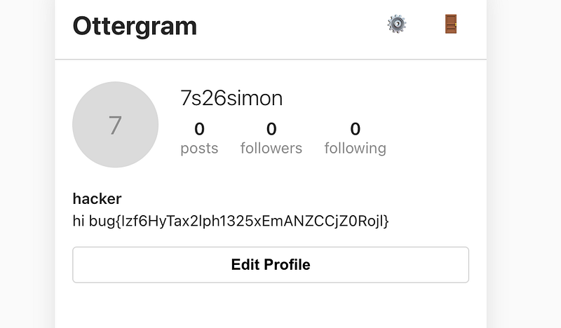
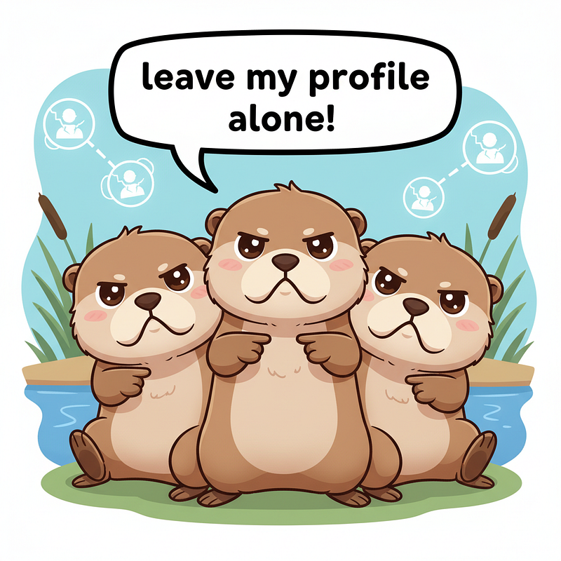

OSCP · OSWP · PWPP · PWPA · PAPA · EnCE · Linux+ · LPIC-1 · Network+ · Security+ · Pentest+ · eJPT · eWPT · BSc · PGCert
Ottergram writeup

Let’s dive right in!
Step 1: Create two users
I do this out of habit now, to the point where I autofill the register field to save me typing it out every time I do a lab.

Do this for the two users you’ll be creating (or register them manually, whatever you prefer).
Step 2: Login as your user(s)
Log in and with both accounts, browse to the person icon in the bottom right and you’ll arrive at your profile page. Open dev tools and edit profile. In the box that appears, type anything you want and save it.
Now look at dev tools and you’ll see that your response confirms the profile was updated successfully.

Step 3: Payload tab
Browse over to the Payload tab to see your own ID is displayed as ‘5’ (yours may be different, so adjust this guide accordingly).

Whilst still logged in as your first user, in my case (hacker), browse to your secondary profile, in my case (7s26simon) by going to <url>/profile/<username> and look at the response. You’ll see the ID of your target. In my case, it’s 4.

Step 4: cURL
Go back to your profile and edit it again, but this time, after you edit it, copy the request as cURL by right clicking > copy > Copy as cURL.

Step 5: Modify & Send payload
Open up a terminal and paste in the payload. But before you hit send, change the ID to the target ID from the previous steps.
You should get a message to say the profile updated successfully.

Step 6: Flag
Refresh the page as your target and you should be greeted with the flag in the bio.

Thanks for reading!
P.S
The otters were not happy!

🍺 Quick message to readers: if my writeups help you, please consider a small donation to my buymeacoffee link here. This is not required but is very much appreciated! 🍺